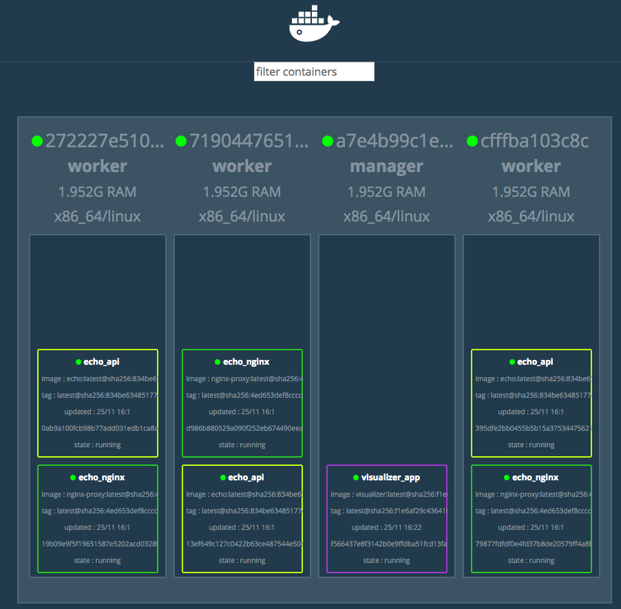

目次
Contents
アプリケーションをコンテナの中にどのように配置するかを意識することが重要
1コンテナ = 1プロセス を絶対条件とはしない
子プロセスまで意識するのは本末転倒
ジョブ task.sh を作る
#!/bin/sh echo "[`date`] Hello!" >> /var/log/cron.log
cron の定義ファイル cron-example を作る
* * * * * root sh /usr/local/bin/task.sh
Dockerfile を作る
# ubuntu:16.04 イメージをベースにイメージをビルドする FROM ubuntu:16.04 # apt で cron をインストールする RUN apt update RUN apt install -y cron # task.sh と cron-example を追加する COPY task.sh /usr/local/bin/ COPY cron-example /etc/cron.d/ # cron-example に 644 パーミッションを設定する RUN chmod 0644 /etc/cron.d/cron-example # cron を実行 CMD ["cron", "-f"]
Docker イメージをビルドする
$ docker image build -t example/cronjob:latest . Sending build context to Docker daemon 4.096kB Step 1/7 : FROM ubuntu:16.04 16.04: Pulling from library/ubuntu 18d680d61657: Pull complete 0addb6fece63: Pull complete 78e58219b215: Pull complete eb6959a66df2: Pull complete Digest: sha256:76702ec53c5e7771ba3f2c4f6152c3796c142af2b3cb1a02fce66c697db24f12 Status: Downloaded newer image for ubuntu:16.04 ---> 4a689991aa24 Step 2/7 : RUN apt update ---> Running in f1a3582eabce WARNING: apt does not have a stable CLI interface. Use with caution in scripts. Get:1 http://security.ubuntu.com/ubuntu xenial-security InRelease [107 kB] Get:2 http://archive.ubuntu.com/ubuntu xenial InRelease [247 kB] Get:3 http://security.ubuntu.com/ubuntu xenial-security/main amd64 Packages [745 kB] Get:4 http://archive.ubuntu.com/ubuntu xenial-updates InRelease [109 kB] Get:5 http://archive.ubuntu.com/ubuntu xenial-backports InRelease [107 kB] Get:6 http://archive.ubuntu.com/ubuntu xenial/main amd64 Packages [1558 kB] Get:7 http://security.ubuntu.com/ubuntu xenial-security/restricted amd64 Packages [12.7 kB] Get:8 http://security.ubuntu.com/ubuntu xenial-security/universe amd64 Packages [507 kB] Get:9 http://security.ubuntu.com/ubuntu xenial-security/multiverse amd64 Packages [4027 B] Get:10 http://archive.ubuntu.com/ubuntu xenial/restricted amd64 Packages [14.1 kB] Get:11 http://archive.ubuntu.com/ubuntu xenial/universe amd64 Packages [9827 kB] Get:12 http://archive.ubuntu.com/ubuntu xenial/multiverse amd64 Packages [176 kB] Get:13 http://archive.ubuntu.com/ubuntu xenial-updates/main amd64 Packages [1139 kB] Get:14 http://archive.ubuntu.com/ubuntu xenial-updates/restricted amd64 Packages [13.1 kB] Get:15 http://archive.ubuntu.com/ubuntu xenial-updates/universe amd64 Packages [906 kB] Get:16 http://archive.ubuntu.com/ubuntu xenial-updates/multiverse amd64 Packages [19.0 kB] Get:17 http://archive.ubuntu.com/ubuntu xenial-backports/main amd64 Packages [7959 B] Get:18 http://archive.ubuntu.com/ubuntu xenial-backports/universe amd64 Packages [8532 B] Fetched 15.5 MB in 7s (2058 kB/s) Reading package lists... Building dependency tree... Reading state information... 8 packages can be upgraded. Run 'apt list --upgradable' to see them. Removing intermediate container f1a3582eabce ---> 830dd5ddc59f Step 3/7 : RUN apt install -y cron ---> Running in 422f3c36a217 WARNING: apt does not have a stable CLI interface. Use with caution in scripts. Reading package lists... Building dependency tree... Reading state information... Suggested packages: anacron logrotate checksecurity exim4 | postfix | mail-transport-agent The following NEW packages will be installed: cron 0 upgraded, 1 newly installed, 0 to remove and 8 not upgraded. Need to get 68.4 kB of archives. After this operation, 249 kB of additional disk space will be used. Get:1 http://archive.ubuntu.com/ubuntu xenial/main amd64 cron amd64 3.0pl1-128ubuntu2 [68.4 kB] debconf: delaying package configuration, since apt-utils is not installed Fetched 68.4 kB in 1s (46.3 kB/s) Selecting previously unselected package cron. (Reading database ... 4768 files and directories currently installed.) Preparing to unpack .../cron_3.0pl1-128ubuntu2_amd64.deb ... Unpacking cron (3.0pl1-128ubuntu2) ... Processing triggers for systemd (229-4ubuntu21.4) ... Setting up cron (3.0pl1-128ubuntu2) ... Adding group `crontab' (GID 106) ... Done. update-rc.d: warning: start and stop actions are no longer supported; falling back to defaults update-rc.d: warning: stop runlevel arguments (1) do not match cron Default-Stop values (none) invoke-rc.d: could not determine current runlevel invoke-rc.d: policy-rc.d denied execution of start. Processing triggers for systemd (229-4ubuntu21.4) ... Removing intermediate container 422f3c36a217 ---> 26f4442bdb46 Step 4/7 : COPY task.sh /usr/local/bin/ ---> 19ffed305de1 Step 5/7 : COPY cron-example /etc/cron.d/ ---> 5c668e8b7598 Step 6/7 : RUN chmod 0644 /etc/cron.d/cron-example ---> Running in 359ef325d9f4 Removing intermediate container 359ef325d9f4 ---> 50c072151bea Step 7/7 : CMD ["cron", "-f"] ---> Running in b459df083f79 Removing intermediate container b459df083f79 ---> 83bf96fc9d27 Successfully built 83bf96fc9d27 Successfully tagged example/cronjob:latest
Docker イメージを実行する
$ docker container run -d --rm --name cronjob example/cronjob:latest 05bb3788a766a415b3d888480faf7854351f1c39317deaeeff6aef8ce9f4c9c9
ジョブが実行されているところを見てみる
$ docker container exec -it cronjob tail -f /var/log/cron.log tail: cannot open '/var/log/cron.log' for reading: No such file or directory tail: no files remaining
実行されていなかった。。
cron 自体は動いていて、
$ docker container exec -it cronjob sh # /etc/init.d/cron status * cron is running
task.sh 単体では正常動作するので、
# sh /usr/local/bin/task.sh # cat /var/log/cron.log [Sun Nov 18 10:20:18 UTC 2018] Hello [Sun Nov 18 10:30:22 UTC 2018] Hello
たぶん、 cron の設定がよくないんだと思う。
/etc/crontab と同じ書式で書けば良い、とのことなので、
# cat /etc/crontab # /etc/crontab: system-wide crontab # Unlike any other crontab you don't have to run the `crontab' # command to install the new version when you edit this file # and files in /etc/cron.d. These files also have username fields, # that none of the other crontabs do. SHELL=/bin/sh PATH=/usr/local/sbin:/usr/local/bin:/sbin:/bin:/usr/sbin:/usr/bin # m h dom mon dow user command 17 * * * * root cd / && run-parts --report /etc/cron.hourly 25 6 * * * root test -x /usr/sbin/anacron || ( cd / && run-parts --report /etc/cron.daily ) ...
まねをして、 cron-example を更新した
SHELL=/bin/sh # これと PATH=/usr/local/sbin:/usr/local/bin:/sbin:/bin:/usr/sbin:/usr/bin # これを追記 * * * * * root sh /usr/local/bin/task.sh # ここのスペースの空け方もそっくり同じに変えた
docker container stop -> 再度 docker image build -> docker container run
動いた.......
$ docker container exec -it cronjob tail -f /var/log/cron.log [Sun Nov 18 11:24:01 UTC 2018] Hello [Sun Nov 18 11:25:01 UTC 2018] Hello [Sun Nov 18 11:26:01 UTC 2018] Hello
本の見本はきっと、「そんなのわかってるよね」で省略したんだな...
Each container should have only one concern
コンテナは一つの関心事だけに集中すべきだ ( https://docs.docker.com/develop/develop-images/dockerfile_best-practices/ )
1つのコンテナはある1つの役割 (ロール) や問題領域 (ドメイン) のみにフォーカスされるべきである
それぞれのコンテナが担うべき役割を適切に見定め、かつそれがレプリカとして複製された場合でも副作用なくスタックとして正しく動作できる状態になるか？ という考え方に基づいて設計すると良い
Docker の大きな利点はポータビリティ (可搬性) にある。
アプリケーションとインフラをコンテナという単位で分離できる
Docker がインストールされているホストであればアプリケーションとして同じ挙動が期待できる再現性がある
Docker が動作する環境でさえあればホストOSも問わない
実行するプラットフォームが、オンプレミス環境でもクラウド環境でも関係なく動く
Docker のポータビリティは完璧なものではなく、いくつかの例外が存在する
ホスト型仮想技術のようにハードウェアを演算によって再現する方式とは違い、Docker のコンテナ型貸そうか技術ではホストOSとカーネルのリソースを共有している
ある特定のCPUアーキテクチャやOSの前提の上に成立している
アプリケーションが利用しているライブラリによっても、ポータビリティが損なわれるケースが存在する
ネイティブライブラリをダイナミックリンクするようなケース
Docker コンテナ上での実行を想定したアプリケーションを作るには、ネイティブライブラリを極力スタティックリンクしてビルドすることを第一に考えるべき
Docker において ポータビリティ という言葉はしばしば独り歩きしがちですが、これが絶対的なものではない、ということを理解しておかなければならない
コンテナ化の恩恵を最大限受けるには。
アプリケーションの挙動を環境変数で制御するのがおすすめ。
環境変数は、アプリケーションとは別のリポジトリで管理するのが一般的
docker-compose であれば env 属性に列挙する
Kubernetes や Amazon ECS にも同様の仕組みがある
各環境で利用する環境変数を定義したファイルを集約したリポジトリを作って管理するのが良いでしょう
Docker コンテナを実行中に書き込まれたファイルは、ホスト側にファイル・ディレクトリをマウントしない限りコンテナを廃棄したタイミングでディスクから消去される。
Data Volume で各コンテナとホストで永続化データを共有するほかに、 Data Volume コンテナという永続化データ用のコンテナを起動する手法もある。
Docker コンテナ内のディレクトリをディスクに永続化するための仕組み
ホスト・コンテナ間のディレクトリの共有・再利用が可能になる
イメージを更新して新しくコンテナを作成しても、同じ Data Volume を利用し続けることができる
コンテナを破棄してもディスクに保持される
コンテナでステートフルなアプリケーションを実行する用途に向いている
$ docker container run [options] -v ホスト側ディレクトリ:コンテナ側ディレクトリ リポジトリ名[:タグ] [コマンド] [コマンド引数]
コンテナの中で画像ファイルを作成する。
$ docker container run -v ${PWD}:/workspace gihyodocker/imagemagick:latest convert -size 100x100 xc:#000000 /workspace/gihyo.jpg Unable to find image 'gihyodocker/imagemagick:latest' locally latest: Pulling from gihyodocker/imagemagick ff3a5c916c92: Pull complete 9a79e6da4633: Pull complete d46751c713a4: Pull complete Digest: sha256:883299973ff2e6183ddc7e042d5b44e5c0bbe24b746ab382fba558a42284cb02 Status: Downloaded newer image for gihyodocker/imagemagick:latest
Data Volume を通じて、イメージを更新することなく、ホスト側で編集したファイルをコンテナに共有できる
Data Volume を設定していると、初回のコンテナ作成時にホスト側の指定したパスで共有されて、コンテナ停止・廃棄後も残る
ホストの特定のパスに依存しているし、ホスト側の Data Volume への誤操作によってアプリケーションに副作用が起きることもあるので、ポータビリティの面では課題のある手法であることも覚えておきましょう
コンテナのデータ永続化手法として推奨されている
Data Volume コンテナによって Data Volume への操作がカプセル化されるため、ホストをあまり意識せずに Data Volume を利用できる
コンテナ内のアプリケーションとデータの密結合が緩和される
アプリケーションコンテナと Data Valume コンテナの付け替えや移行をスムーズに行うことができる
コンテナ間でディレクトリを共有する
データだけを持つコンテナ
Data Volume コンテナの Volume は Docker の管理領域であるホスト側の /var/lib/docker/valumes/ 以下に配置されている
Docker の管理下にあるディレクトリのみに影響する
コンテナに与える影響を最小限に抑えられる
Data Volume コンテナは Volume への仲介役としての役割を持つ
Volume を必要とするコンテナは、ホスト側のその場所を知る必要はなく、ディレクトリを提供してくれる Data Volume コンテナのみ知っていればよい
Data Volume コンテナの Dockerfile を用意する
# 最小限のOSの機能を備えた非常に軽量なOS。しばしばベースのDockerイメージとして利用される FROM busybox VOLUME /var/lib/mysql CMD ["bin/true"]
Data Volume コンテナのイメージをビルドする
# Dockerfile のあるディレクトリで実行する $ docker image build -t example/mysql-data:latest . Sending build context to Docker daemon 2.048kB Step 1/3 : FROM busybox latest: Pulling from library/busybox 90e01955edcd: Pull complete Digest: sha256:2a03a6059f21e150ae84b0973863609494aad70f0a80eaeb64bddd8d92465812 Status: Downloaded newer image for busybox:latest ---> 59788edf1f3e Step 2/3 : VOLUME /var/lib/mysql ---> Running in 1ab0898c94a2 Removing intermediate container 1ab0898c94a2 ---> 1f5d663c0ce1 Step 3/3 : CMD ["bin/true"] ---> Running in 1fddf68af7c2 Removing intermediate container 1fddf68af7c2 ---> e4bdb5df5b5d Successfully built e4bdb5df5b5d Successfully tagged example/mysql-data:latest
Data Volume コンテナを実行する (コンテナは廃棄されない限りディスクに保持される)
$ docker container run -d --name mysql-data example/mysql-data:latest edaab85b9b7e3505c93d8d8947ef2b868cd620765a439bbb77a93c92cfa96373
MySQL コンテナを実行する
$ docker container run -d --rm --name mysql \ -e "MYSQL_ALLOW_EMPTY_PASSWORD=yes" \ -e "MYSQL_DATABASE=volume_test" \ -e "MYSQL_USER=example" \ -e "MYSQL_PASSWORD=example" \ --volumes-from mysql-data \ mysql:5.7 Unable to find image 'mysql:5.7' locally 5.7: Pulling from library/mysql a5a6f2f73cd8: Pulling fs layer 936836019e67: Pulling fs layer 283fa4c95fb4: Pull complete 1f212fb371f9: Pull complete e2ae0d063e89: Pull complete 5ed0ae805b65: Pull complete 0283dc49ef4e: Pull complete a7905d9fbbea: Pull complete cd2a65837235: Pull complete 5f906b8da5fe: Pull complete e81e51815567: Pull complete Digest: sha256:c23e9bfe66eeffc990cf6bce4bb0e9c5c85eb908170f3b3dde3e9a12c5a91689 Status: Downloaded newer image for mysql:5.7 f702db74f9156b20595fe04d3df09b2f0008bf707bb9b2c32db593fd33941342
実行中の mysql コンテナに root アカウントでログイン (パスワードは空)
$ docker container exec -it mysql mysql -u root -p volume_test Enter password: Welcome to the MySQL monitor. Commands end with ; or \g. Your MySQL connection id is 2 Server version: 5.7.24 MySQL Community Server (GPL) Copyright (c) 2000, 2018, Oracle and/or its affiliates. All rights reserved. Oracle is a registered trademark of Oracle Corporation and/or its affiliates. Other names may be trademarks of their respective owners. Type 'help;' or '\h' for help. Type '\c' to clear the current input statement. mysql> CREATE TABLE user( -> id int PRIMARY KEY AUTO_INCREMENT, -> name VARCHAR(255) -> ) ENGINE=InnoDB DEFAULT CHARSET=utf8mb4 COLLATE utf8mb4_unicode_ci; Query OK, 0 rows affected (0.01 sec) mysql> INSERT INTO user (name) VALUES ('gihyo'), ('docker'), ('Solomon Hykes'); Query OK, 3 rows affected (0.01 sec) Records: 3 Duplicates: 0 Warnings: 0
mysql コンテナを停止する ( --rm オプションをつけて実行したため、停止すると廃棄される)
$ docker container stop mysql mysql
再度、新しい mysql コンテナを実行する。
$ docker container run -d --rm --name mysql \ -e "MYSQL_ALLOW_EMPTY_PASSWORD=yes" \ -e "MYSQL_DATABASE=volume_test" \ -e "MYSQL_USER=example" \ -e "MYSQL_PASSWORD=example" \ --volumes-from mysql-data \ mysql:5.7 f180d4063914b43b7d522324eb5abf5640b67d6342cb353b04ea77f85d347dcb
実行中の mysql コンテナに root アカウントでログイン (パスワードは空) すると、先ほどのデータが残っている!!
$ docker container exec -it mysql mysql -u root -p volume_test Enter password: Reading table information for completion of table and column names You can turn off this feature to get a quicker startup with -A Welcome to the MySQL monitor. Commands end with ; or \g. Your MySQL connection id is 2 Server version: 5.7.24 MySQL Community Server (GPL) Copyright (c) 2000, 2018, Oracle and/or its affiliates. All rights reserved. Oracle is a registered trademark of Oracle Corporation and/or its affiliates. Other names may be trademarks of their respective owners. Type 'help;' or '\h' for help. Type '\c' to clear the current input statement. mysql> SELECT * FROM user; +----+---------------+ | id | name | +----+---------------+ | 1 | gihyo | | 2 | docker | | 3 | Solomon Hykes | +----+---------------+ 3 rows in set (0.00 sec)
Data Volume は同一 Docker ホスト内でのみ有効
他の Docker ホストで使いたいときは、 Data Volume コンテナからデータをファイルとしてホストにエクスポートする
$ docker container run -v `${PWD}`:/tmp \ --volumes-from mysql-data \ busybox \ tar cvzf /tmp/mysql-backup.tar.gz /var/lib/mysql
これ (できなかったけど) はちょっと不便なので、Volume Plugins がいろいろある
多くのリクエストをさばく必要のある実用的なシステムでは複数のコンテナを複数のホストに配置させる必要がある
コンテナをどのように配置すべきか
複数の Docker ホストをどのように制御すべきか
Docker Swarm:
複数の Docker ホストを束ねてクラスタ化するためのツール
コンテナオーケストレーションシステムのひとつ
複数のッホストを意識せずにクラスタを透過的に操作できる
名称 |
役割 |
対応するコマンド |
|---|---|---|
Compose |
複数コンテナを使う Docker アプリケーションの管理 (主にシングルホスト) |
docker-compose |
Swarm |
クラスタの構築や管理を担う (主にマルチホスト) |
docker swarm |
Service |
Swarm前提、クラスタ内の Service (1つ以上のコンテナの集まり) を管理する |
docker service |
Stack |
Swarm前提、複数の Service をまとめたアプリケーション全体の管理 |
docker stack |
Docker in Docker (dind):
Docker ホストとして機能する Docker コンテナを複数個立てられる
Docker ホストをコンテナで入れ子にできる
docker-compose.yml を作成する。
version: "3" services: registry: # Docker レジストリ役のコンテナ container_name: registry image: registry:2.6 ports: - 5000:5000 volumes: - "./registry-data:/var/lib/registry" # 永続化のため、ホストにマウント manager: # Swarm クラスタ全体を制御する役割 container_name: manager image: docker:18.05.0-ce-dind privileged: true tty: true ports: - 8000:80 - 9000:9000 depends_on: - registry expose: - 3375 command: "--insecure-registry registry:5000" # HTTP でも利用できるようにしている volumes: - "./stack:/stack" worker01: # ノードの役割 container_name: worker01 image: docker:18.05.0-ce-dind privileged: true tty: true depends_on: - manager - registry expose: - 7946 - 7946/udp - 4789/udp command: "--insecure-registry registry:5000" worker02: # ノードの役割 container_name: worker02 image: docker:18.05.0-ce-dind privileged: true tty: true depends_on: - manager - registry expose: - 7946 - 7946/udp - 4789/udp command: "--insecure-registry registry:5000" worker03: # ノードの役割 container_name: worker03 image: docker:18.05.0-ce-dind privileged: true tty: true depends_on: - manager - registry expose: - 7946 - 7946/udp - 4789/udp command: "--insecure-registry registry:5000"
Compose を実行する。
$ docker-compose up -d ... Creating registry ... done Creating manager ... done Creating worker03 ... done Creating worker01 ... done Creating worker02 ... done # 実行中のコンテナを確認する $ docker container ls CONTAINER ID IMAGE COMMAND CREATED STATUS PORTS NAMES cfffba103c8c docker:18.05.0-ce-dind "dockerd-entrypoint.…" 5 seconds ago Up 4 seconds 2375/tcp, 4789/udp, 7946/tcp, 7946/udp worker03 272227e51007 docker:18.05.0-ce-dind "dockerd-entrypoint.…" 5 seconds ago Up 4 seconds 2375/tcp, 4789/udp, 7946/tcp, 7946/udp worker02 7190447651de docker:18.05.0-ce-dind "dockerd-entrypoint.…" 5 seconds ago Up 4 seconds 2375/tcp, 4789/udp, 7946/tcp, 7946/udp worker01 a7e4b99c1ee7 docker:18.05.0-ce-dind "dockerd-entrypoint.…" 6 seconds ago Up 5 seconds 2375/tcp, 3375/tcp, 0.0.0.0:9000->9000/tcp, 0.0.0.0:8000->80/tcp manager 3c0a564dbbac registry:2.6 "/entrypoint.sh /etc…" 7 seconds ago Up 6 seconds 0.0.0.0:5000->5000/tcp registry
manager コンテナを、 Swarm の manager に設定する。
$ docker container exec -it manager docker swarm init # JOIN トークンが発行される # Docker ホストを Swarm クラスタの worker として登録するには、この JOIN トークンが必要 Swarm initialized: current node (7f20ikf4s04lp9abasnvm8euz) is now a manager. To add a worker to this swarm, run the following command: docker swarm join --token SWMTKN-1-55tobs2vcs0odcbd40q5m42y9obs08wgm4200q9udctpv25gu6-4oy23esi800n14wwoddl7ma4n 172.27.0.3:2377 To add a manager to this swarm, run 'docker swarm join-token manager' and follow the instructions.
JOIN トークンを利用して、3つのノードを Swarm クラスタに worker として登録する。
# manager と全ての worker コンテナは Compose で作成されたデフォルトネットワーク上で実行されているので、お互いをコンテナ名で名前解決できる $ docker container exec -it worker01 docker swarm join \ --token SWMTKN-1-55tobs2vcs0odcbd40q5m42y9obs08wgm4200q9udctpv25gu6-4oy23esi800n14wwoddl7ma4n manager:2377 This node joined a swarm as a worker. $ docker container exec -it worker02 docker swarm join \ --token SWMTKN-1-55tobs2vcs0odcbd40q5m42y9obs08wgm4200q9udctpv25gu6-4oy23esi800n14wwoddl7ma4n manager:2377 This node joined a swarm as a worker. $ docker container exec -it worker03 docker swarm join \ --token SWMTKN-1-55tobs2vcs0odcbd40q5m42y9obs08wgm4200q9udctpv25gu6-4oy23esi800n14wwoddl7ma4n manager:2377 This node joined a swarm as a worker. # ノードが追加されたか確認する。 $ docker container exec -it manager docker node ls ID HOSTNAME STATUS AVAILABILITY MANAGER STATUS ENGINE VERSION u8crbubyz85jmnpou9zgnc1wf 272227e51007 Ready Active 18.05.0-ce ww80hcmlzbga1cprtz0cmmuu2 7190447651de Ready Active 18.05.0-ce 7f20ikf4s04lp9abasnvm8euz * a7e4b99c1ee7 Ready Active Leader 18.05.0-ce j91gerxg4um0r05wukdfoqwo1 cfffba103c8c Ready Active 18.05.0-ce
Docker イメージにタグをつける
# docker image tag example/echo:latest [レジストリのホスト/]リポジトリ名[:タグ] # レジストリのホスト = イメージの push 先および pull 先のレジストリ $ docker image tag example/echo:latest localhost:5000/example/echo:latest
ホストから、 registry コンテナにイメージを push する
# 2章で作ったイメージを push する $ docker image push localhost:5000/example/echo:latest The push refers to repository [localhost:5000/example/echo] b2aff6d696c0: Preparing f18abb5d7b45: Preparing 186d94bd2c62: Preparing b2aff6d696c0: Pushed e7dc337030ba: Pushed 920961b94eb3: Pushed fa0c3f992cbd: Pushed ce6466f43b11: Pushed 719d45669b35: Pushed 3b10514a95be: Pushed latest: digest: sha256:834be6348517746b53f3d44c56b580a0cea74161b86426cc006b1c066c48e047 size: 2417
worker01 コンテナ上で registry コンテナから Docker イメージを pull する。
# worker01 から registry で名前解決できる $ docker container exec -it worker01 docker image pull registry:5000/example/echo:latest # イメージを pull できたか確認する。 $ docker container exec -it worker01 docker image ls
Service にレプリカ数の制御を指示すると、自動でコンテナを複製し、複数のノードにまたがって適切に配置してくれる。
スケールアウトが容易
docker container run の代わりにこれ
Service を作成する。
$ docker container exec -it manager \
docker service create --replicas 1 --publish 8000:8000 --name echo registry:5000/example/echo:latest
Service の一覧を表示する。
$ docker container exec -it manager docker service ls
ID NAME MODE REPLICAS IMAGE PORTS
uurtfoiovt5t echo replicated 1/1 registry:5000/example/echo:latest *:8000->8000/tcp
該当サービスのコンテナ数を増減できる。
$ docker container exec -it manager docker service scale echo=6
echo scaled to 6
overall progress: 6 out of 6 tasks
1/6: running [==================================================>]
2/6: running [==================================================>]
3/6: running [==================================================>]
4/6: running [==================================================>]
5/6: running [==================================================>]
6/6: running [==================================================>]
verify: Service converged
Swarm クラスタ上で実行されているコンテナを確認する。
$ docker container exec -it manager docker service ps echo | grep Running
# Service によって Swarm クラスタのノードに分散して配置されていることがわかる
q5rd4bezklf2 echo.1 registry:5000/example/echo:latest a7e4b99c1ee7 Running Running 8 minutes ago
cgt98m1d4395 echo.2 registry:5000/example/echo:latest cfffba103c8c Running Running about a minute ago
u5120nxk830w echo.3 registry:5000/example/echo:latest 7190447651de Running Running 2 minutes ago
9ejgtkum844u echo.4 registry:5000/example/echo:latest 272227e51007 Running Running about a minute ago
mqkivzbb5j3e echo.5 registry:5000/example/echo:latest 272227e51007 Running Running about a minute ago
7xdlngpoid1i echo.6 registry:5000/example/echo:latest a7e4b99c1ee7 Running Running 2 minutes ago
デプロイした service は docker service rm サービス名 で削除できる。
$ docker container exec -it manager docker service rm echo
echo
$ docker container exec -it manager docker service ls
ID NAME MODE REPLICAS IMAGE PORTS
Stack: 複数の Service をグルーピングした単位であり、アプリケーションの全体の構成を定義する。
Service は１つのアプリケーションイメージしか扱うことができないが、複数の Service が強調して動作することで成立するアプリケーションも多くある
これを解決する上位概念が Stack
Stack は複数の Service を扱うことができる
Stack が扱うアプリケーションの粒度は Compose と同等
Stack はいわば Swarm 上でスケールイン・スケールアウトや constraint が可能になった Compose という位置付け
Stack によってデプロイされる Service 群は overlay ネットワークに所属する
overlay ネットワークとは複数の Docker ホストにデプロイされているコンテナ群を同じネットワークに配置させることができる技術
overlay ネットワークによって、 Docker ホスト間を越えたコンテナ間通信が可能となる
overlay ネットワークを作成する。
# ch03 という名前にする $ docker container exec -it manager docker network create --driver=overlay --attachable ch03 ts9rcnez3tl5oi4z9p0qbc030
Stack を作成する。
version: "3" services: nginx: image: gihyodocker/nginx-proxy:latest deploy: replicas: 3 # レプリカ数 placement: # コンテナの配置戦略 constraints: [node.role != manager] # manager 以外のノードにコンテナを配置する environment: BACKEND_HOST: echo_api:8080 # リクエストの転送先 depends_on: - api networks: - ch03 api: image: registry:5000/example/echo:latest deploy: replicas: 3 # レプリカ数 placement: # コンテナの配置戦略 constraints: [node.role != manager] # manager 以外のノードにコンテナを配置する networks: - ch03 networks: ch03: external: true
docker stack のサブコマンド stack サブコマンド
内容
deploy
新規に Stack をデプロイ、または更新する
ls
デプロイされている Stack の一覧を表示する
ps
Stack によってデプロイされているコンテナの一覧を表示する
rm
デプロイされている Stack を削除する
services
Stack 内の Service 一覧を表示する
$ docker stack deploy [options] stack名
-c: Stack 定義ファイルへのパス
stack を echo という Stack 名でデプロイする。
# stack ディレクトリは manager コンテナの /stack にマウントされている $ docker container exec -it manager docker stack deploy -c /stack/ch03-webapi.yml echo Creating service echo_nginx Creating service echo_api
$ docker stack services [options] Stack名
echo スタックの Service 一覧を表示する。
$ docker container exec -it manager docker stack services echo ID NAME MODE REPLICAS IMAGE PORTS lbomogfj0q65 echo_nginx replicated 3/3 gihyodocker/nginx-proxy:latest wh6ddqk6q4zj echo_api replicated 3/3 registry:5000/example/echo:latest
$ docker stack ps [options] Stack名
echo スタックでデプロイされたコンテナの一覧を表示する。
$ docker container exec -it manager docker stack ps echo
visualizer.yml を作成する。
version: "3" services: app: image: dockersamples/visualizer ports: - "9000:8080" # ポートフォワード (manager <=> visualizer) volumes: - /var/run/docker.sock:/var/run/docker.sock deploy: mode: global # 特定のコンテナをクラスタ上の全ノードに配置できる設定 placement: constraints: [node.role == manager] # manager ノードだけに配置する
Stack としてデプロイする。
$ docker container exec -it manager docker stack deploy -c /stack/visualizer.yml visualizer Creating network visualizer_default Creating service visualizer_app
-

デプロイした Stack を Service ごと削除する。
$ docker container exec -it manager docker stack rm echo
Removing service echo_api
Removing service echo_nginx
複数のコンテナが複数のノードに分散して配置されている Service にホストからアクセスする。
Service クラスタ外からのトラフィックを、目的の Service に転送するためのプロキシサーバーを置く
HAProxy:
プロキシサーバー
外部から Service へアクセスするための橋渡し (ingress) をする
Service が配置されているノードへのロードバランシングをする
ch03-ingress.yml を作成する。
version: "3" services: haproxy: image: dockercloud/haproxy networks: - ch03 volumes: - /var/run/docker.sock:/var/run/docker.sock deploy: mode: global # 特定のコンテナをクラスタ上の全ノードに配置できる設定 placement: constraints: - node.role == manager # manager ノードだけに配置する ports: - "80:80" # ポートフォワード - 1936:1936 # for stats page (basic auth. stats:stats) networks: ch03: external: true
ch03-webapi.yml の、 nginx の環境変数に SERVICE_PORTS を追加する。
version: "3" services: nginx: image: gihyodocker/nginx-proxy:latest deploy: replicas: 3 # レプリカ数 placement: # コンテナの配置戦略 constraints: [node.role != manager] # manager 以外のノードにコンテナを配置する environment: SERVICE_PORTS: 80 # HAProxy が Service を見つけ出すため BACKEND_HOST: echo_api:8080 # リクエストの転送先 depends_on: - api networks: - ch03 api: image: registry:5000/example/echo:latest deploy: replicas: 3 # レプリカ数 placement: # コンテナの配置戦略 constraints: [node.role != manager] # manager 以外のノードにコンテナを配置する networks: - ch03 networks: ch03: external: true
ch03-webapi.yml を echo Stack としてデプロイする。
$ docker container exec -it manager docker stack deploy -c /stack/ch03-webapi.yml echo Creating service echo_nginx Creating service echo_api
ch03-ingress.yml を ingress Stack としてデプロイする。
$ docker container exec -it manager docker stack deploy -c /stack/ch03-ingress.yml ingress Creating service ingress_haproxy
Service の配置を確認する。
$ docker container exec -it manager docker service ls ID NAME MODE REPLICAS IMAGE PORTS 11wu48dvb9s0 echo_api replicated 3/3 registry:5000/example/echo:latest pyov2dftee9g echo_nginx replicated 3/3 gihyodocker/nginx-proxy:latest nxxu04tsdqql ingress_haproxy global 1/1 dockercloud/haproxy:latest *:80->80/tcp, *:1936->1936/tcp sqoaqpzkr2g5 visualizer_app global 1/1 dockersamples/visualizer:latest *:9000->8080/tcp
echo_nginx にアクセスできるようになる。
$ curl http://localhost:8000/ Hello Docker!!
Service はレプリカ数 (コンテナの数) を制御することで容易にコンテナを複製でき、複数のノードに配置できるため、スケールアウトへの親和性が高い
Service によって管理される複数のレプリカは Service 名で名前解決でき、かつ、 Service へのトラフィックはレプリカへ分散される。
Swarm クラスタ外から Swarm の Service を利用するには、 Service にトラフィックを分散するためのプロキシを用意する。
Stack は、複数の Service をグルーピングでき、複数の Service で形成されるアプリケーションのデプロイに役立つ。